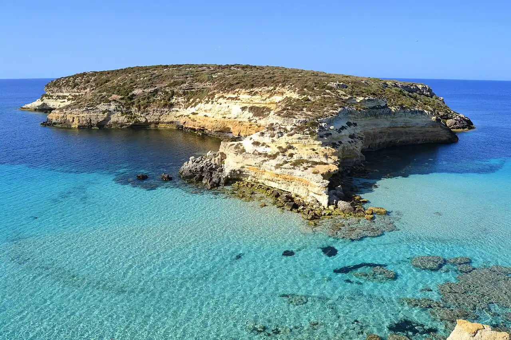

Spiaggia dei Conigli
Îles Pélages, Sicile, Italie · baignade, snorkeling

Crique de sable blanc face à l’îlot des Lapins, dans la réserve naturelle de Lampedusa. C’est l’un des rares sites de ponte de la tortue caouanne en Italie, d’où des règles d’accès strictes.
- Lieu
- Îles Pélages, Sicile, Italie
- Niveau
- Débutant
- Activités
- baignade, snorkeling
- Type d'eau
- Mer / océan
- Coordonnées
- 35.51, 12.56 (position approximative du secteur)
Dangers à connaître
- Accès par un sentier en descente, sans ombre.
- Zone de ponte protégée : ne t’approche pas des nids balisés.
Le conseil d'Ocean Buddy
Vérifie les horaires et le nombre de places : l’accès est réglementé en été et la plage ferme la nuit pour les tortues.
Ouvrir dans Ocean Buddy Télécharger sur l'App Store
Source : Fiche Ocean Buddy · septembre 2026 · à vérifier localement.